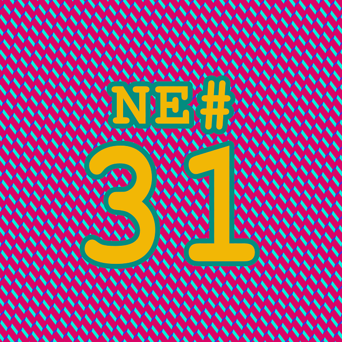
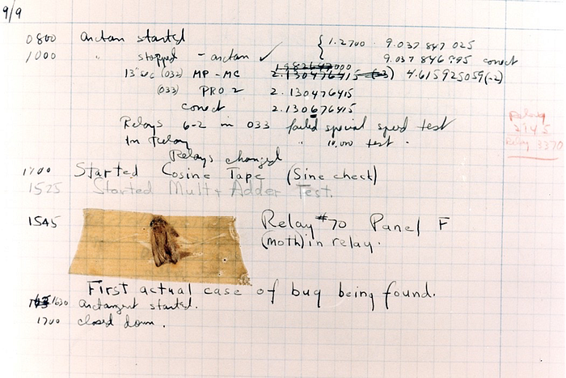

Die Nerd Enzyklopädie 31 - Der allererste Bug

Als ein Bug wird ein Fehler in einem Programm verstanden. Am 9. September des Jahres 1945 soll es sich zugetragen habe, dass der Mark II, ein Computer der Harvard University, eine Fehlermeldung≤ ausgab. Selbst Universitäts-Computer sind davor nicht gefeit.
Man öffnete im Rahmen der Fehlersuche also den Computer — die waren zu der Zeit ja etwas größer als die Smartwatch an unserem Handgelenk — und fand die offensichtliche Ursache des Problems: Eine Motte! Sie wollte es sich im Panel F im Relay 70 gemütlich machen und hat dieses wagemutige Vorhaben mit dem Leben bezahlt - die Todesursache ist leider nicht überliefert.
Die leiblichen Überreste der Motte wurden in ein Logbuch geklebt (warum eigentlich?) und von Dr. Grace Hopper mit der berühmten Bemerkung kommentiert: “First actual case of bug being found.”

Zwar war das der erste dokumentierte Fall einer Motte in einem Computer. Doch das war mitnichten, wie oft angenommen, die Geburt des Begriffs Bug als Synonym für einen Fehler in einem System. Dazu kam es weitaus früher, nämlich Ende des 19. Jahrhunderts durch unseren alten Bekannten Thomas Edison:
‘Bugs’ — as such little faults and difficulties are called — show themselves and months of intense watching, study and labor are requisite before commercial success or failure is certainly reached.
Thomas Edison an Theodore Puskas, 1878 [COMP1]
Der Begriff fand dann sogar Einzug in das Oxford English Dictionary:
a defect or fault in a machine, plan, or the like.
Dort wird als Quelle die Pall Mall Gazette angegeben [JSTO1]:
“Mr [Thomas] Edison… had been up the two previous nights discovering a ‘bug’ in his phonograph — an expression for solving a difficulty, and implying that some imaginary insect had secreted itself inside and is causing all the trouble.
Thomas Edison, March 11, 1889
Es sollte auch erwähnt werden, dass Dr. Hopper die Motte weder gefunden noch in das Logbuch geklebt, sondern nur den ikonischen Kommentar darunter verfasste [PCWE1].
Nichtsdestotrotz sollten wir erfurchtsvoll anerkennen, dass die Motte in Panel F ihr Leben dafür gelassen hat, dem Begriff Bug zum Durchbruch zu verhelfen, ihn zu prägen. Danke, Motte.